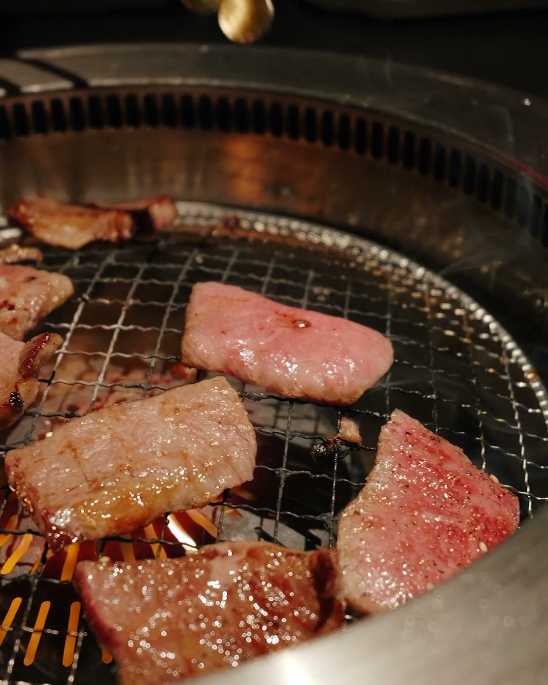
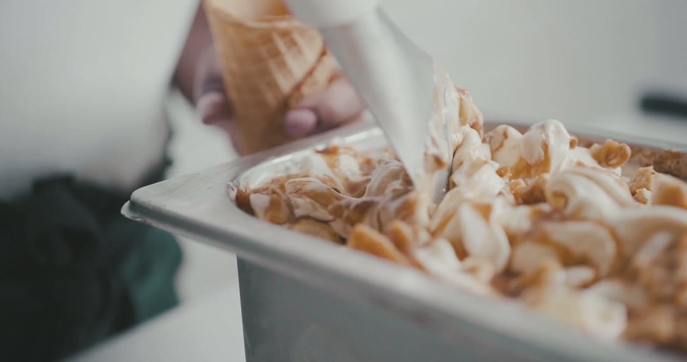
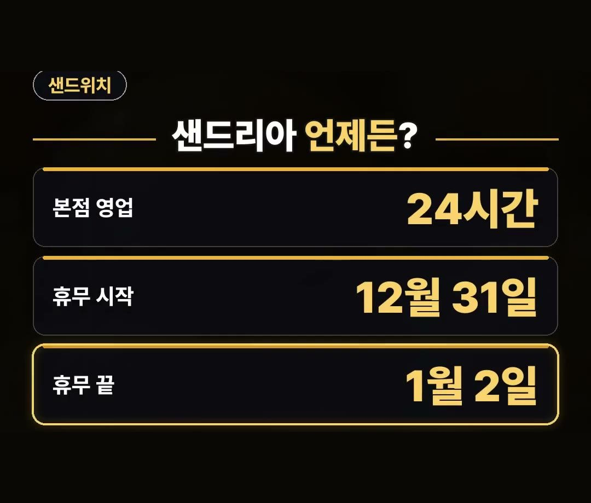
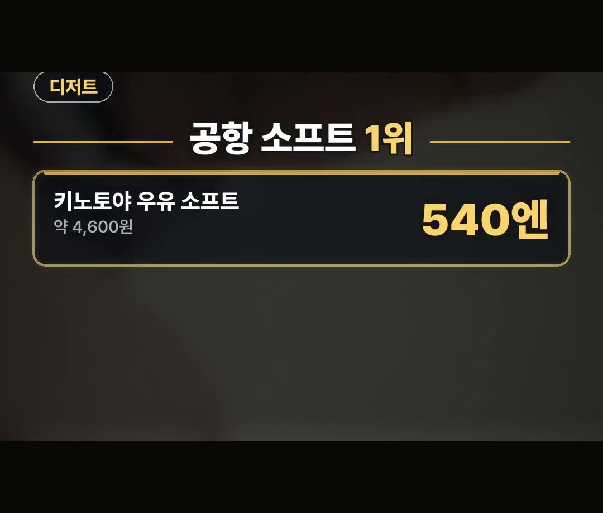

삿포로 맛집, 24시간 샌드위치부터 새벽 2시 반 징기스칸까지 도착 시각별 정리
※ 이 글에는 제휴 링크가 포함되어 있으며, 링크를 통해 예약·구매하시면 일정 수수료를 받을 수 있습니다. (가격은 같습니다)
※ 이 포스팅은 쿠팡 파트너스 활동의 일환으로, 이에 따른 일정액의 수수료를 제공받습니다.
삿포로 여행을 계획할 때 비행기나 열차로 도착하는 시각에 따라 방문할 수 있는 식당이 달라서 고민이 생기곤 합니다.
낮 시간대뿐만 아니라 늦은 밤이나 새벽에 도착하더라도 일정에 맞춰 찾아갈 수 있는 가게 정보를 미리 파악해 두면 편리합니다.
이번 글에서는 도착 시각에 맞춰 방문하기 좋은 삿포로 맛집 관련 정보를 가격 및 영업시간과 함께 정리했습니다.
삿포로 맛집을 찾을 때는 도착 시각에 맞춘 영업시간 확인이 중요해요!
징기스칸 다루마 본점은 2026년 10월 기준 1인분 793엔(약 6,700원)이며, 신치토세 공항 키노토야 우유 소프트는 2025년 총선거 진한 맛 부문 1위를 기록했으니 참고하세요. 💡

삿포로 맛집 리스트: 24시간 영업하는 포장 전문 샌드리아 본점
밤늦은 시간이나 이른 아침에 도착했을 때 방문하기 좋은 곳으로 샌드리아 본점이 있습니다.
이곳은 포장 전문 샌드위치 공방으로 24시간 영업을 진행하는 점이 특징입니다.
다만 연말연시 일정에는 휴무일이 정해져 있으므로 미리 확인하는 것이 좋습니다.
- 샌드리아 본점 영업시간: 24시간 영업
- 연말연시 휴일: 12월 31일부터 1월 2일까지
삿포로 맛집 구글맵: 새벽 2시 반까지 영업하는 징기스칸 다루마 본점

저녁 늦게 삿포로 맛집 구글맵이나 동선을 확인하며 방문할 만한 곳으로는 양고기 전문점인 징기스칸 다루마 본점이 있습니다.
영업이 새벽까지 이어져 저녁 늦은 시각에 도착해도 식사가 가능합니다.

가격 조건과 영업시간은 다음과 같습니다.
- 영업 시작: 저녁 5시
- 영업 끝: 새벽 2시 반
- 가격(2026년 10월 기준): 1인분 793엔 (약 6,700원)
미요시노 교자 카레와 공항 소프트크림 정보

식사 메뉴로 접할 수 있는 미요시노 교자 카레는 2024년 기사 기준 660엔(약 5,600원)입니다.
디저트로 유명한 신치토세 공항 키노토야 우유 소프트는 2025년 총선거 진한 맛 부문 1위를 차지한 바 있습니다.

- 미요시노 교자 카레: 660엔 (약 5,600원, 2024년 기사 기준)
- 신치토세 공항 키노토야 우유 소프트: 540엔 (약 4,600원)
정리
1. 샌드리아 본점은 포장 전문 샌드위치 공방으로 24시간 영업하며 12월 31일부터 1월 2일은 휴일입니다.
2. 징기스칸 다루마 본점은 저녁 5시부터 새벽 2시 반까지 영업하며 2026년 10월 기준 1인분 793엔(약 6,700원)입니다.
3. 신치토세 공항 키노토야 우유 소프트는 2025년 총선거 진한 맛 부문 1위로 540엔(약 4,600원)입니다.
최저가 예약 링크는 아래에 모아 두었어요.
지금 쓸 수 있는 여행사 할인
- 📶 해외 데이터는 이심으로 미리 · 마이리얼트립 마이심 「일본 50% 1,400원~」 · 2개 이상 추가 할인 (마이심 화면 표시 기준 · 10/5 확인 · 값은 바뀔 수 있음)
- 🎟 클룩 일본 어트랙션 5% 할인 코드 「일본어트랙션5%」 (최소 구매 금액 없음 · 최대 4천 원 · 일부 상품 제외 · 쿠폰 취소 시 재발행 불가 · 예산 소진 시 조기 종료 · 12월 31일까지)
※ 여행사 사정으로 조건이 바뀌거나 일찍 끝날 수 있어요. 예약 전에 여행사 화면에서 한 번 더 확인하세요. (2026-10-05 확인)
📘 무료 여행 가이드 전자책 모음 보기 (오사카 · 후쿠오카 · 타이베이 · 도쿄) ›
📌 2026년 10월 기준 정보예요. 가격은 환율·시기에 따라 달라질 수 있어요.
사진·영상: Pexels (Airam Dato-on, Angela Roma, Johnson Hie, Judas Isariot, Nelemson G, ROMAN ODINTSOV)